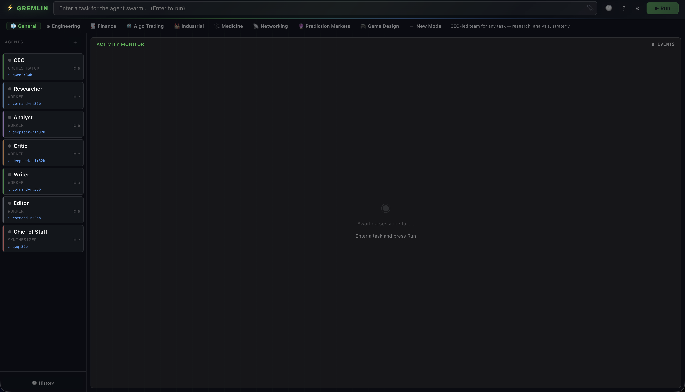

A browser-native multi-agent coordinator. Spin up a team of AI agents that message each other, call tools, and converge on a result — using any model you choose: local (Ollama, LM Studio, WebLLM) or cloud (OpenAI, Anthropic, Gemini, Groq, OpenRouter, Together, or any OpenAI-compatible endpoint). No server required.

Gremlin runs a team of AI agents from a browser tab. Each agent has its own system prompt, model, and role. They send messages to each other, call tools (web search, file system, browser), and converge on a result. You watch the whole conversation happen in real time.
The Vite dev server is the runtime — there is no separate backend. The coordinator and UI run locally; inference can run locally (Ollama, LM Studio, WebLLM) or against any cloud provider (OpenAI, Anthropic, Gemini, Groq, OpenRouter, Together, or any OpenAI-compatible endpoint). API keys live in localStorage and only ever reach the provider you point them at.
A TypeScript coordinator (coordinator.ts) holds the in-memory agent state and routes messages. Each agent returns JSON:
The coordinator routes each message to its recipient and runs the next agent. When an agent sets done: true with a result, that agent stops. The synthesizer's result is shown to the user.
Agents can also call tools via the standard tool-calling API:
127.0.0.1:3131Each mode loads a preset roster of agents. You can edit any agent, save a new mode from your current team, or delete custom modes.
Gremlin is a coordinator, not a model. Point it at any supported provider and pick a model per agent — mix local and cloud across the same team if you want.
API keys live in localStorage and are sent only to the provider you point them at. Nothing is proxied through Gremlin's servers — there are no Gremlin servers.
Three commands. The dev server is the app — open the URL it prints.
$ git clone https://github.com/aosmith/gremlin.git
$ cd gremlin/web
$ npm install
$ npm run dev
# → http://localhost:5173
Requires Node.js 18+. For local inference, install Ollama; Gremlin detects your GPU on first run and recommends per-agent models. For cloud inference, drop an API key into Settings.